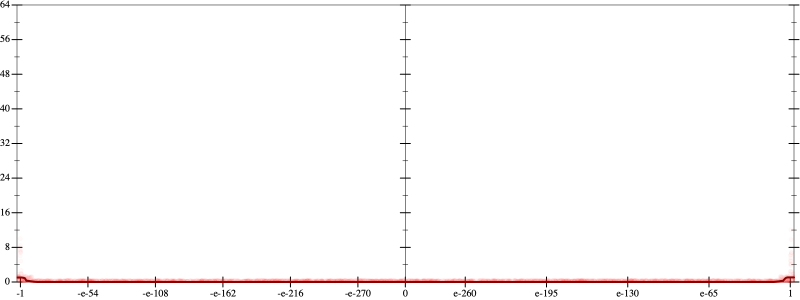
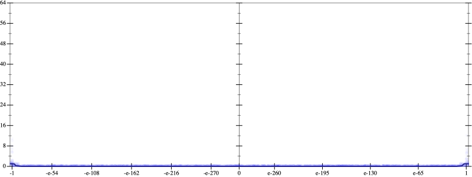
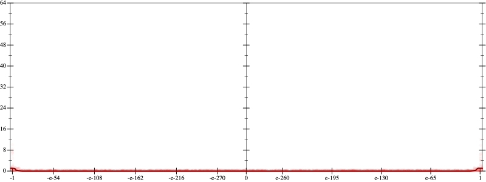
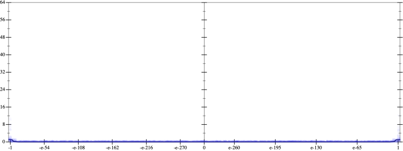

Initial program 0.0
\[\left(\left(\left(\left(\left(17297280.0 \cdot x + -69189120.0 \cdot \left(\left(x \cdot x\right) \cdot x\right)\right) + 69189120.0 \cdot \left(\left(\left(\left(x \cdot x\right) \cdot x\right) \cdot x\right) \cdot x\right)\right) + -26357760.0 \cdot \left(\left(\left(\left(\left(\left(x \cdot x\right) \cdot x\right) \cdot x\right) \cdot x\right) \cdot x\right) \cdot x\right)\right) + 4392960.0 \cdot \left(\left(\left(\left(\left(\left(\left(\left(x \cdot x\right) \cdot x\right) \cdot x\right) \cdot x\right) \cdot x\right) \cdot x\right) \cdot x\right) \cdot x\right)\right) + -319488.0 \cdot \left(\left(\left(\left(\left(\left(\left(\left(\left(\left(x \cdot x\right) \cdot x\right) \cdot x\right) \cdot x\right) \cdot x\right) \cdot x\right) \cdot x\right) \cdot x\right) \cdot x\right) \cdot x\right)\right) + 8192.0 \cdot \left(\left(\left(\left(\left(\left(\left(\left(\left(\left(\left(\left(x \cdot x\right) \cdot x\right) \cdot x\right) \cdot x\right) \cdot x\right) \cdot x\right) \cdot x\right) \cdot x\right) \cdot x\right) \cdot x\right) \cdot x\right) \cdot x\right)\]
Taylor expanded around inf 0.0
\[\leadsto \left(\left(\left(\left(\left(17297280.0 \cdot x + -69189120.0 \cdot \left(\left(x \cdot x\right) \cdot x\right)\right) + 69189120.0 \cdot \left(\left(\left(\left(x \cdot x\right) \cdot x\right) \cdot x\right) \cdot x\right)\right) + \color{blue}{-26357760.0 \cdot {x}^{7}}\right) + 4392960.0 \cdot \left(\left(\left(\left(\left(\left(\left(\left(x \cdot x\right) \cdot x\right) \cdot x\right) \cdot x\right) \cdot x\right) \cdot x\right) \cdot x\right) \cdot x\right)\right) + -319488.0 \cdot \left(\left(\left(\left(\left(\left(\left(\left(\left(\left(x \cdot x\right) \cdot x\right) \cdot x\right) \cdot x\right) \cdot x\right) \cdot x\right) \cdot x\right) \cdot x\right) \cdot x\right) \cdot x\right)\right) + 8192.0 \cdot \left(\left(\left(\left(\left(\left(\left(\left(\left(\left(\left(\left(x \cdot x\right) \cdot x\right) \cdot x\right) \cdot x\right) \cdot x\right) \cdot x\right) \cdot x\right) \cdot x\right) \cdot x\right) \cdot x\right) \cdot x\right) \cdot x\right)\]
Applied simplify0.0
\[\leadsto \color{blue}{\left(\left(\left(\left(4392960.0 \cdot x\right) \cdot \left(x \cdot x\right)\right) \cdot \left({x}^{3} \cdot {x}^{3}\right) + \left({x}^{7} \cdot -26357760.0 + 17297280.0 \cdot x\right)\right) + \left(x \cdot x\right) \cdot \left(-69189120.0 \cdot x + \left(x \cdot 69189120.0\right) \cdot \left(x \cdot x\right)\right)\right) + \left(\left(\left(\left(x \cdot x\right) \cdot \left(x \cdot x\right)\right) \cdot \left(\left(x \cdot x\right) \cdot \left(x \cdot x\right)\right)\right) \cdot {x}^{3}\right) \cdot \left(-319488.0 + 8192.0 \cdot \left(x \cdot x\right)\right)}\]
- Using strategy
rm Applied add-cbrt-cube0.0
\[\leadsto \left(\left(\left(\left(4392960.0 \cdot x\right) \cdot \left(x \cdot x\right)\right) \cdot \left({x}^{3} \cdot {x}^{3}\right) + \left({x}^{7} \cdot -26357760.0 + 17297280.0 \cdot x\right)\right) + \left(x \cdot x\right) \cdot \color{blue}{\sqrt[3]{\left(\left(-69189120.0 \cdot x + \left(x \cdot 69189120.0\right) \cdot \left(x \cdot x\right)\right) \cdot \left(-69189120.0 \cdot x + \left(x \cdot 69189120.0\right) \cdot \left(x \cdot x\right)\right)\right) \cdot \left(-69189120.0 \cdot x + \left(x \cdot 69189120.0\right) \cdot \left(x \cdot x\right)\right)}}\right) + \left(\left(\left(\left(x \cdot x\right) \cdot \left(x \cdot x\right)\right) \cdot \left(\left(x \cdot x\right) \cdot \left(x \cdot x\right)\right)\right) \cdot {x}^{3}\right) \cdot \left(-319488.0 + 8192.0 \cdot \left(x \cdot x\right)\right)\]
Applied add-cbrt-cube0.0
\[\leadsto \left(\left(\left(\left(4392960.0 \cdot x\right) \cdot \left(x \cdot x\right)\right) \cdot \left({x}^{3} \cdot {x}^{3}\right) + \left({x}^{7} \cdot -26357760.0 + 17297280.0 \cdot x\right)\right) + \color{blue}{\sqrt[3]{\left(\left(x \cdot x\right) \cdot \left(x \cdot x\right)\right) \cdot \left(x \cdot x\right)}} \cdot \sqrt[3]{\left(\left(-69189120.0 \cdot x + \left(x \cdot 69189120.0\right) \cdot \left(x \cdot x\right)\right) \cdot \left(-69189120.0 \cdot x + \left(x \cdot 69189120.0\right) \cdot \left(x \cdot x\right)\right)\right) \cdot \left(-69189120.0 \cdot x + \left(x \cdot 69189120.0\right) \cdot \left(x \cdot x\right)\right)}\right) + \left(\left(\left(\left(x \cdot x\right) \cdot \left(x \cdot x\right)\right) \cdot \left(\left(x \cdot x\right) \cdot \left(x \cdot x\right)\right)\right) \cdot {x}^{3}\right) \cdot \left(-319488.0 + 8192.0 \cdot \left(x \cdot x\right)\right)\]
Applied cbrt-unprod0.0
\[\leadsto \left(\left(\left(\left(4392960.0 \cdot x\right) \cdot \left(x \cdot x\right)\right) \cdot \left({x}^{3} \cdot {x}^{3}\right) + \left({x}^{7} \cdot -26357760.0 + 17297280.0 \cdot x\right)\right) + \color{blue}{\sqrt[3]{\left(\left(\left(x \cdot x\right) \cdot \left(x \cdot x\right)\right) \cdot \left(x \cdot x\right)\right) \cdot \left(\left(\left(-69189120.0 \cdot x + \left(x \cdot 69189120.0\right) \cdot \left(x \cdot x\right)\right) \cdot \left(-69189120.0 \cdot x + \left(x \cdot 69189120.0\right) \cdot \left(x \cdot x\right)\right)\right) \cdot \left(-69189120.0 \cdot x + \left(x \cdot 69189120.0\right) \cdot \left(x \cdot x\right)\right)\right)}}\right) + \left(\left(\left(\left(x \cdot x\right) \cdot \left(x \cdot x\right)\right) \cdot \left(\left(x \cdot x\right) \cdot \left(x \cdot x\right)\right)\right) \cdot {x}^{3}\right) \cdot \left(-319488.0 + 8192.0 \cdot \left(x \cdot x\right)\right)\]
Applied simplify0.0
\[\leadsto \left(\left(\left(\left(4392960.0 \cdot x\right) \cdot \left(x \cdot x\right)\right) \cdot \left({x}^{3} \cdot {x}^{3}\right) + \left({x}^{7} \cdot -26357760.0 + 17297280.0 \cdot x\right)\right) + \sqrt[3]{\color{blue}{\left(\left(x \cdot -69189120.0 + \left(x \cdot 69189120.0\right) \cdot \left(x \cdot x\right)\right) \cdot \left(x \cdot -69189120.0 + \left(x \cdot 69189120.0\right) \cdot \left(x \cdot x\right)\right)\right) \cdot \left(\left({\left(x \cdot x\right)}^{3} \cdot x\right) \cdot \left(\left(x \cdot 69189120.0\right) \cdot x + -69189120.0\right)\right)}}\right) + \left(\left(\left(\left(x \cdot x\right) \cdot \left(x \cdot x\right)\right) \cdot \left(\left(x \cdot x\right) \cdot \left(x \cdot x\right)\right)\right) \cdot {x}^{3}\right) \cdot \left(-319488.0 + 8192.0 \cdot \left(x \cdot x\right)\right)\]
- Using strategy
rm Applied flip-+0.0
\[\leadsto \left(\left(\left(\left(4392960.0 \cdot x\right) \cdot \left(x \cdot x\right)\right) \cdot \left({x}^{3} \cdot {x}^{3}\right) + \left({x}^{7} \cdot -26357760.0 + 17297280.0 \cdot x\right)\right) + \sqrt[3]{\left(\left(x \cdot -69189120.0 + \left(x \cdot 69189120.0\right) \cdot \left(x \cdot x\right)\right) \cdot \left(x \cdot -69189120.0 + \left(x \cdot 69189120.0\right) \cdot \left(x \cdot x\right)\right)\right) \cdot \left(\left({\left(x \cdot x\right)}^{3} \cdot x\right) \cdot \color{blue}{\frac{\left(\left(x \cdot 69189120.0\right) \cdot x\right) \cdot \left(\left(x \cdot 69189120.0\right) \cdot x\right) - -69189120.0 \cdot -69189120.0}{\left(x \cdot 69189120.0\right) \cdot x - -69189120.0}}\right)}\right) + \left(\left(\left(\left(x \cdot x\right) \cdot \left(x \cdot x\right)\right) \cdot \left(\left(x \cdot x\right) \cdot \left(x \cdot x\right)\right)\right) \cdot {x}^{3}\right) \cdot \left(-319488.0 + 8192.0 \cdot \left(x \cdot x\right)\right)\]
Applied associate-*r/0.0
\[\leadsto \left(\left(\left(\left(4392960.0 \cdot x\right) \cdot \left(x \cdot x\right)\right) \cdot \left({x}^{3} \cdot {x}^{3}\right) + \left({x}^{7} \cdot -26357760.0 + 17297280.0 \cdot x\right)\right) + \sqrt[3]{\left(\left(x \cdot -69189120.0 + \left(x \cdot 69189120.0\right) \cdot \left(x \cdot x\right)\right) \cdot \left(x \cdot -69189120.0 + \left(x \cdot 69189120.0\right) \cdot \left(x \cdot x\right)\right)\right) \cdot \color{blue}{\frac{\left({\left(x \cdot x\right)}^{3} \cdot x\right) \cdot \left(\left(\left(x \cdot 69189120.0\right) \cdot x\right) \cdot \left(\left(x \cdot 69189120.0\right) \cdot x\right) - -69189120.0 \cdot -69189120.0\right)}{\left(x \cdot 69189120.0\right) \cdot x - -69189120.0}}}\right) + \left(\left(\left(\left(x \cdot x\right) \cdot \left(x \cdot x\right)\right) \cdot \left(\left(x \cdot x\right) \cdot \left(x \cdot x\right)\right)\right) \cdot {x}^{3}\right) \cdot \left(-319488.0 + 8192.0 \cdot \left(x \cdot x\right)\right)\]
Applied associate-*r/0.0
\[\leadsto \left(\left(\left(\left(4392960.0 \cdot x\right) \cdot \left(x \cdot x\right)\right) \cdot \left({x}^{3} \cdot {x}^{3}\right) + \left({x}^{7} \cdot -26357760.0 + 17297280.0 \cdot x\right)\right) + \sqrt[3]{\color{blue}{\frac{\left(\left(x \cdot -69189120.0 + \left(x \cdot 69189120.0\right) \cdot \left(x \cdot x\right)\right) \cdot \left(x \cdot -69189120.0 + \left(x \cdot 69189120.0\right) \cdot \left(x \cdot x\right)\right)\right) \cdot \left(\left({\left(x \cdot x\right)}^{3} \cdot x\right) \cdot \left(\left(\left(x \cdot 69189120.0\right) \cdot x\right) \cdot \left(\left(x \cdot 69189120.0\right) \cdot x\right) - -69189120.0 \cdot -69189120.0\right)\right)}{\left(x \cdot 69189120.0\right) \cdot x - -69189120.0}}}\right) + \left(\left(\left(\left(x \cdot x\right) \cdot \left(x \cdot x\right)\right) \cdot \left(\left(x \cdot x\right) \cdot \left(x \cdot x\right)\right)\right) \cdot {x}^{3}\right) \cdot \left(-319488.0 + 8192.0 \cdot \left(x \cdot x\right)\right)\]
Applied cbrt-div0.0
\[\leadsto \left(\left(\left(\left(4392960.0 \cdot x\right) \cdot \left(x \cdot x\right)\right) \cdot \left({x}^{3} \cdot {x}^{3}\right) + \left({x}^{7} \cdot -26357760.0 + 17297280.0 \cdot x\right)\right) + \color{blue}{\frac{\sqrt[3]{\left(\left(x \cdot -69189120.0 + \left(x \cdot 69189120.0\right) \cdot \left(x \cdot x\right)\right) \cdot \left(x \cdot -69189120.0 + \left(x \cdot 69189120.0\right) \cdot \left(x \cdot x\right)\right)\right) \cdot \left(\left({\left(x \cdot x\right)}^{3} \cdot x\right) \cdot \left(\left(\left(x \cdot 69189120.0\right) \cdot x\right) \cdot \left(\left(x \cdot 69189120.0\right) \cdot x\right) - -69189120.0 \cdot -69189120.0\right)\right)}}{\sqrt[3]{\left(x \cdot 69189120.0\right) \cdot x - -69189120.0}}}\right) + \left(\left(\left(\left(x \cdot x\right) \cdot \left(x \cdot x\right)\right) \cdot \left(\left(x \cdot x\right) \cdot \left(x \cdot x\right)\right)\right) \cdot {x}^{3}\right) \cdot \left(-319488.0 + 8192.0 \cdot \left(x \cdot x\right)\right)\]
 
